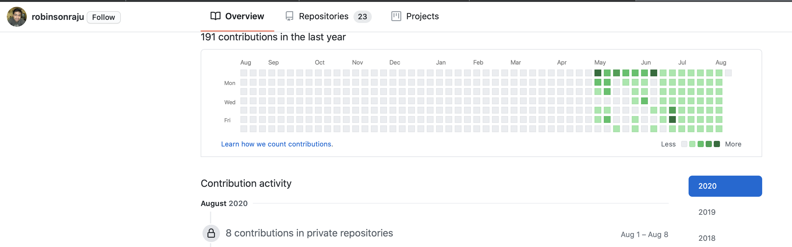

One of the things that I wanted to do this year was to focus a bit more on writing. I’ve had times when I wrote in bursts, and I always told myself - Yeah, this is great. I should do more of it. It is not like I feel like a Yoda who knows too much and needs to write down to teach others, in fact, it is just the opposite. I’m always pulled in multiple directions to learn different things since there is so much to learn. The act of writing itself brings some kind of joy that is fulfilling to me.
Some short periods of writing that I remember.
- 2000s
- Of course, I wrote a lot of code during this time, but that doesn’t count.
- During my initial days as software developer, I used to write on the side, not software or technical stuff but just random things that I wanted to be made as stories.
- Started blogging using ger.
- Started writing poetry, even made a book of poetry with my wife.
- 2010s
- When I took up CS 200, the professor wanted us to write an article every week. That topic of focus at that time was Project Management.
- When I took up CS 297, the professor wanted us to write an article or prepare a ppt for the set of research papers we read that past week.
- Doing MS CS at SJSU was probably the best learning experience I had. Got opportunities to solidify a lot of concepts, comprehend technical material better, and write technical papers.
Writing (or anything for that matter) is easier when you’re doing it for someone. When someone is expecting an output from you, it is easy to sit down and meet the deadline. But there is more satisfaction in doing things that no one asked for, in doing things that you asked yourself. Makes you feel in control and not being controlled.
So, I committed to writing at least for 30 minutes per day. Regardless of whether it was good or not, the purpose was to build the habit. I was able to write long notes like The Return of the Native which is over 7000 words by just writing a bit each day as a I read. Was trying hard to follow the Seinfeld method1 and not break the chain. Luckily, github shows the chain beautifully and I didn’t have to buy a calendar like what Seinfeld had suggested.

Writing or reading is the hardest when you have a long list of things to be done and when you feel the need to have more than 24 hours in a day just to keep up with the unending list. It is easy to give advice to someone and tell them to prioritize when they are actually caught in a quicksand that is pulling them down. So, one actually needs to be fortunate to be a able set even 10 minutes towards something that one wants to do. I’m grateful to have gotten the time.
Footnotes
-
Jerry Seinfeld’s Productivity Secret. Seinfeld revealed a unique calendar system he uses to pressure himself to write every day. Here’s how it works. He told me to get a big wall calendar that has a whole year on one page and hang it on a prominent wall. The next step was to get a big red magic marker. He said for each day that I do my task of writing, I get to put a big red X over that day. “After a few days you’ll have a chain. Just keep at it and the chain will grow longer every day. You’ll like seeing that chain, especially when you get a few weeks under your belt. Your only job next is to not break the chain.” “Don’t break the chain,” he said again for emphasis. ↩